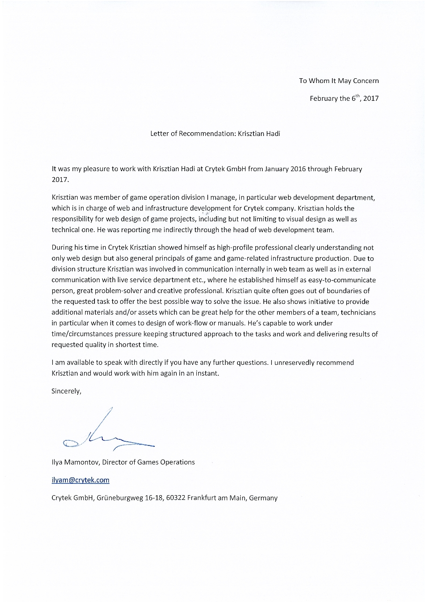

Warface Auction House
Senior Web Designer and UI developer @ Crytek — 2016

What is Warface?
Warface is an online multiplayer FPS from Crytek — cooperative, competitive, and free to play.
It makes its money from micro-transactions. Two currencies: one you collect by playing, the other you buy with real money (USD/EUR). Credits go on loot boxes — the slot machine — or on restocking consumables.
Frustration
Like most free-to-play games, the money comes from cosmetics — which keeps the power balance intact and the matches fair.
You get those skins from loot boxes, or as a reward for challenges.
The frustration starts after a thousand boxes, when you still don't have the item you're after and every opponent is running around with it. There's no trading weapons or skins. Try again. And again…
That feels like wasted money — past a point you're not buying credits, you're buying luck. And that frustration ends two ways: people quit, or they stop buying credits.
Risk
Just let the player trade items. Easy.
Yes, we had the same thoughts. Opening up trading brings risks that can wreck a community.
Fraud and stolen accounts, for one. Hacked accounts aren't that common, and mostly they get used for trolling. Once you can "take" items, though, someone else's account becomes a much better target.
The second follows from the first: most loot box purchases run on credits bought with real money, so there's real money on the table.
And beyond all that, we had to consider what happens to box sales — and to the excitement — if players can just buy whatever they want.
Solution
Auctions are about as old as trade itself, they carry enough excitement, and the time factor makes them safer than a straight 1-on-1 trade.
For that to work we needed rules: how long bidding runs, which items are available.
Money and manpower were tight, so the auction house stayed out of the game itself. The web HUB team was nimbler about this kind of thing — and it gave players a reason to spend time with the game while they weren't playing it.
The HUB was already the centre of the community, with news and forum — the perfect place for the auctions. And one essential part of the process already lived there: buying virtual credits.
Research
Before proposing anything, I spent time inside other auction and trading platforms — games and everything else.
World of Warcraft, Counter-Strike, Diablo — and yes, eBay, where I took plenty of notes.
Meanwhile I pulled a few players into "user interviews" about the feature. That handful became my "beta tester group" later on.
Design
I started with the possible flow variations of the two options: selling and buying.
 A user flow for the auction house, so development could start before the final UI design.
A user flow for the auction house, so development could start before the final UI design.
I had to plan the features so players got the most comfortable experience possible within limited development resources. To make that work, we went for a soft launch: a closed beta internally with the "beta group" first, then a 1–2 week unannounced public run.
 The main view of the auction house with filtering and search.
The main view of the auction house with filtering and search.
Visually, the HUB already had a design system, so the new features had to sit inside it — and extend it where they didn't fit.
I mocked up every step and handed the mockups to the developers, who applied them to the working interfaces they'd built from the wireframes.
I really wanted to keep the interface clean and easy to use. A few key features:
- Autocomplete search, for those "sometimes confusingly named" special edition items
- Filtering by class, so a medic can go straight to the shotguns
- Breadcrumbs, so you always knew where you were
- Quick and automatic bidding — the last few minutes were the fun part
- Recommended items, which helped balance demand and supply
- Rarity and a recommended price on the "sell" screen, so pricing felt fair and realistic
- Notifications with a quick bid and instant credit top-up when the wallet is low — which turned out to be a good monetization spot
 Item view with all in-game stats and bidding interface.
Item view with all in-game stats and bidding interface.
Results
The soft launch let us balance the IT system and finetune the interfaces against real feedback.
In the Warface community it took off: credit sales up 30%+, and it became one of those features people just used.
Marketing got a useful tool out of it too: "Auction Exclusive" items, with control over how rare they stayed.
We watched the market continuously and rotated the list of sellable items, so nothing could flood it.
Takeaway
I learned to compromise, to plan for several iterations, to prioritize — and to take the quick win when it's there.
Bringing the community in early is priceless — working with them like teammates is what made this land as a real addition to the game.
A little bonus story:
The community had more ideas and requests than the scope could hold. So after launch I built two JavaScript bookmarklets in my free time — they turned the page into a tighter, more powerful UI for power users.
The Warface portal doesn't exist anymore, but a few screencap GIFs survive on my CodePen.

Recommendation letter from Ilya Mamontov, Director of Games Operations at Crytek — February 2017.